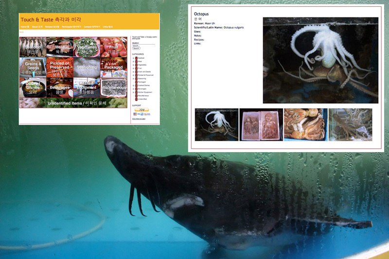

음식에 대한 나의 열정은 SAP 프로젝트에 참여하는 계기가 되었고 이번 프로젝트 기간 동안 나는 한국 요리법에 푹 빠져 지냈다. 재래시장과 백화점의 식품 매장을 여러 군데 돌아다니고, 식당과 가정집에서 소박한 식사부터 고상한 식사까지 두루 체험했다. 이곳에 있으면서 찍은 사진들을 바탕으로 한국의 음식재료에 관한 자료집을 만들고 있다. 이 자료집은 ‘맛과 손길(Taste and Touch)’ 이라는 관람객 참여 웹사이트 (www.touchandtaste.org)에 곧 등재될 것이다. 방문자들은 재료들을 식별하고 요리법을 함께 나누며 웹사이트를 함께 꾸며 나가게 될 것이다. 오픈 스튜디오 기간 동안에 나는 한국에서 발효 음식의 특성을 주제로 한 세미나를 준비할 것이다. 세미나의 요점은 와인과 흡사한 숙성과정을 거치듯 김치, 막걸리, 젓갈 등과 같은 한국의 전통 발효 음식들의 맛을 다루는 것이다. 세미나의 참가자들은 발효 과정을 어떻게 거치냐에 따라 얼마나 한국 음식을 더욱 독특하게 만들어낼 수 있는지에 대해 더 나은 의견을 교환할 수 있다. 세미나의 진행 과정은 비디오로 녹화될 예정이다. 인원수가 제한되므로, 예약은 필수이다.
My passion for food brought me here to Korea for SAP's three month residency program. During my time here I have immersed myself in Korean cuisine. I have shopped in traditional markets and modern department store groceries. I have eaten simple and elaborate meals in restaurants and homes. I am compiling a field guide of Korean ingredients from the photographs I have taken during my time here. This pictorial guide will be published as an interactive website called Taste and Touch (www.touchandtaste.org). Visitors are invited to help me flesh out the website by identifying ingredients and providing recipes. During open studios I will organize a seminar on the nature of fermented food in Korea. The center point of the discussion will be a tasting (similar to a wine tasting) of fermented foods such as kimchi, makgeolli, and jeotgal. The seminar participants will discuss the finer points of how will fermentation makes Korean food unique. The event will be videotaped. The seminar size is extremely limited, reservations are encouraged.

일레인 틴 뇨(Elaine Tin Nyo)는 할렘에 부엌과 스튜디오를 가진 개념적인 예술가이다. 공연, 비디오, 사진, 요리 및 글쓰기를 사용하여, 그녀는 음식의 일상적인 의식과 그것의 준비를 재구성하여 우리가 우리 삶에서 중요하지 않아 보이는 순간들의 내재된 아름다움과 가치를 되새길 수 있다. 그녀의 시각 예술 배경 외에도, 그녀는 3대륙의 가정 요리사와 식당 요리사의 곁에서 배웠다. 그녀는 다른 것들 중에서도 크리에이티브 캐피털(Creative Capital), 브롱크스 박물관(Bronx Museum), 석수 아트 프로젝트(Seoksu Art Project), 프랭클린 퍼니스(Franklin Furnace), 필립스 컬렉션(The Phillips Collection)으로부터 프로젝트 지원을 받았다. 그녀의 사진, 음식, 비디오, 설치물 및 공연은 전세계 많은 박물관에 전시되었다.
Elaine Tin Nyo is a conceptual artist with a kitchen and a studio in Harlem. Using performance, video, photography, cooking and writing, she reframes the everyday rituals of food and its preparation so we may reflect on the inherent beauty and value of the seemingly unimportant moments of our lives. In addition to her visual arts background, she has learned at the side of home cooks and restaurant chefs on three continents. She has received project support from Creative Capital, the Bronx Museum, Seoksu Art Project, Franklin Furnace, and The Phillips Collection, among others. Her photographs, food, videos, installations, and performances have been presented at museums internationally.

작가 홈페이지